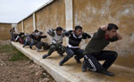
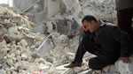

Damascus
Syrian civil war started on March 15, 2011, that's 3 years and 5 months of civil war between the Syrain Armed Forces and the Free Syrain Army. What do you think?
Select User

FreedomWriter01
I am only going to reply with few pictures, because a picture is worth a thousand words



NateDog
I think you fail to realize that almost 75,000 Syrain Armed soldiers died as well. The Free Syrian Army is attacking and killing too you know!

FreedomWriter01
Do you know how many people died??? Do you even have any idea? Let me enlighten you:
Estimates of Deaths in the Syrian Civil War,
per opposition activist groups,vary between 118,500 and 180,215.
On 22 August 2014, the United Nations put out an estimate of over
191,000 that had died in the war.
I put a link to the site you need only click the saddening image below

NateDog
Assad is doing what he got to do to protect his country; threats from the outside and even worst threats from his own people What are you expecting him to do?

FreedomWriter01
Opposition are trying to give the people their country back. It use to be one of the most beautiful countries out there. People were living a good life, in peace. most importantly Its what the people want, not what the government wants.

NateDog
Syrian armed forces are doing what it takes to protect their land and their leader from the bad guys.
Comments
Guest1: This is truly a touchy topic. It's hard to say which group is right or wrong. I guess it all depends on what you believe in. Also the last photo you posted FreedomWriter01 really got to me.
Guest2: I don't think this is a touchy topic at all.